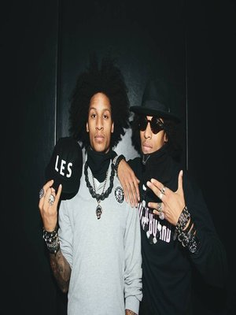
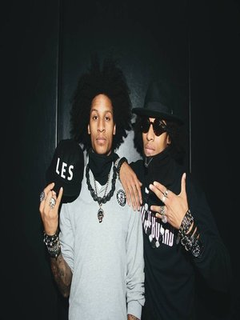
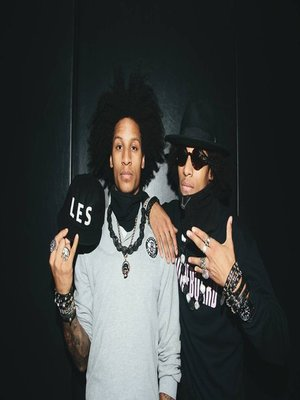
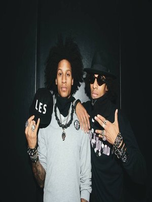

My Favorite Dancers
 



Ballet is a type of performance dance that originated in the Italian Renaissance courts of the 15th century and later developed into a concert dance form in France and Russia. It has since become a widespread, highly technical form of dance with its own vocabulary based on French terminology. It has been globally influential and has defined the foundational techniques used in many other dance genres. Ballet requires years of training to learn and master, and much practice to retain proficiency. It has been taught in ballet schools around the world, which have historically used their own cultures to evolve the art.
Hip-Hop Dancerefers to street dance styles primarily performed to hip-hop music or that have evolved as part of hip-hop culture. It includes a wide range of styles primarily breaking, locking, and popping which were created in the 1970s and made popular by dance crews in the United States. The television show Soul Train and the 1980s films Breakin', Beat Street, and Wild Style showcased these crews and dance styles in their early stages; therefore, giving hip-hop mainstream exposure. The dance industry responded with a commercial, studio-based version of hip-hop—sometimes called "new style"—and a hip-hop influenced style of jazz dance called "jazz-funk". Classically trained dancers developed these studio styles in order to create choreography from the hip-hop dances that were performed on the street. Because of this development, hip-hop dance is practiced in both dance studios and outdoor spaces.
Lyrical Dance is a style of dance created from the fusion of ballet with jazz and contemporary dance techniques and is a "cousin" to those styles. Lyrical dancing is performed to music with lyrics to inspire movements to express strong emotions the choreographer feels from the lyrics in the chosen song. Because lyrical dancing focuses on the expression of strong emotion, the style concentrates more on individual approach and expressiveness than the precision of the dancer's movements.
Dutty Wineis a form of Jamaican head dance, characteristically danced by young women. There are several dancers in Jamaica who claim they were its creator, although there is proof in a video with one of the crowned Dancehall Queens named Mad Michelle first performing the dance in front of a crowd. The dance involves a rotating movement of the neck ("wine" refers to winding, or gyration.) The dancer can also move their legs like a bird, while simultaneously rotating their wrists, neck, and posterior. Sometimes more advanced dancers will include the splits in their Dutty Wine. The dance is not done by ordinary people in Jamaica, only by women who are known dancers or Dancehall Queens. The dance experienced a surge of popularity around the world, especially in Jamaican communities in parts of the United Kingdom and North America. Some even have gone so far as to label it as "the dance craze" of 2006.
Dancing is great exercise, and our studios offer a pleasant, fun atmosphere in which to learn.-Fred Astaire FDS